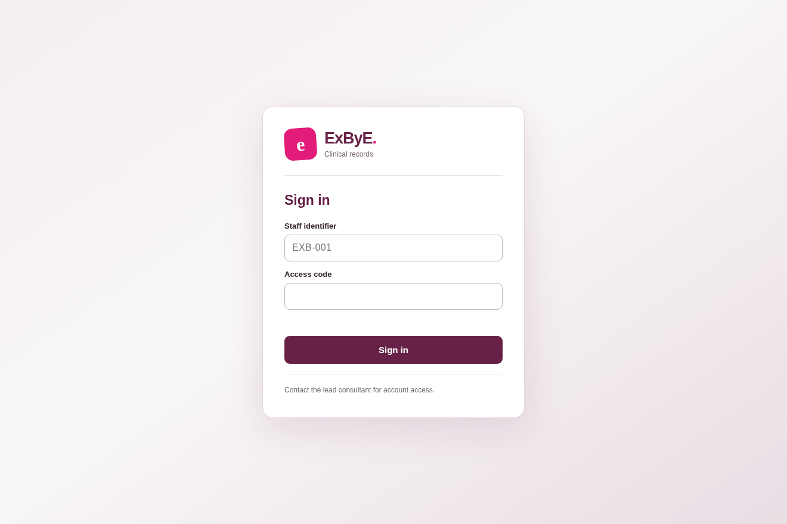
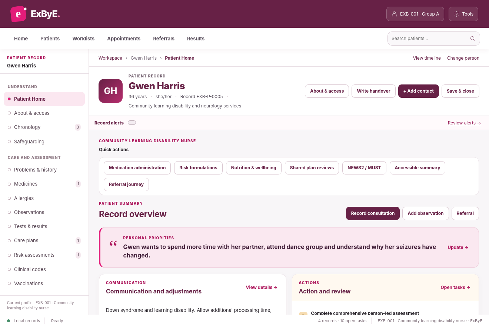

This guide is for the complete ExByE v5.6 HTML application. It works without installing Firebase, Python or a database. You can open it directly on a computer or publish the HTML5 project to a suitable web host.
1. Open the application
- Extract the entire ExByE ZIP file. Do not open the HTML while it is still inside the ZIP.
- Keep the styles, scripts, assets and data folders alongside
index.html. - Double-click
index.html(orExByE.html) and use Chrome or Edge. Safari may also work. - If a browser preview shows a white screen or blocks scripts, use
ExByE-One-File.htmlon a computer instead.
2. Sign in
For your first look around, use the lead consultant account, which can open every record and use administration functions.
For a staff account, codes follow the final three digits of the identifier:
| Staff identifier | Access code |
|---|---|
| EXB-001 | 4001 |
| EXB-002 | 4002 |
| EXB-007 | 4007 |
| EXB-014 | 4014 |
| EXB-030 | 4030 |
These are local test codes, not secure passwords. Groups A–E only see records allocated to their group. EXB-CONSULT has access to all seven records.

3. Find and open a patient
- After signing in, select Patients in the top navigation or Find a person on the left.
- Search for a name, for example Gwen Harris or Zoe Carter.
- Select the patient’s name to open their record.
- Use the left-hand navigation to open Chronology, Medicines, Observations, Tests & results, Care plans, or Risk assessments.

4. Record a consultation or note
- Open a patient and choose Record consultation on Patient Home, or Chronology then New Consultation.
- Complete the consultation fields, including your findings, actions and follow-up as relevant.
- Save the entry and return to the chronology to confirm it appears.
- Use + Note in the journal for a shorter record entry.
5. Request a review or allocate a task
- Open the patient’s Chronology.
- Find a journal entry and choose For review.
- Select the receiving staff identifier (for example, EXB-007), add a reason and set a due date.
- Save the review request. It creates a linked task.
- The review can later be reopened and marked Review completed, with the findings recorded.
6. Complete an assessment and care plan
- Open Gwen Harris as a first example.
- Choose Risk assessments and select Comprehensive assessment.
- Enter information into the relevant assessment sections. You may leave incomplete domains and select Save draft.
- Return to the same assessment to continue. Set the lead professional and review date.
- When the assessment is ready, select Sign assessment. A journal entry and review recall are created.
- Open Care plans and link the findings to goals, planned actions, responsible staff and review dates.
7. Use the other clinical tools
From the relevant patient record, use Observations for NEWS2 and other observations, Tests & results for laboratory results, Medicines for medication history and entries, and Risk assessments for the longer risk formulation, cognitive and mental capacity assessments.
8. Back up your work
- Sign in as EXB-CONSULT because backup and system management are restricted in the standalone edition.
- Choose Tools in the top-right of the application and select Export backup.
- Save the downloaded
.jsonfile in a safe location. - To restore saved work, sign in as consultant and choose Tools → Import backup.
9. What about the Firebase version?
The Firebase edition has not been connected to your Firebase project. You cannot sign into it with the codes above. Once Firebase has been configured, an account-provisioning script creates separate secure passwords for the 30 staff accounts and consultant.
The Firebase project setup guide is in firebase/SETUP_STEP_BY_STEP.md. Finish the standalone walkthrough first, then configure Firebase when you're ready to test two real simultaneous logins.
Problems opening ExByE?
I don't see the login screen
Check that you're opening version 5.6. An earlier version hosted at itch.io may still be online. Upload the latest complete ZIP or open index.html from the extracted v5.6 folder.
I entered a staff code but can't find a patient
Each staff account belongs to a group with allocated records. To inspect every patient, sign out and use EXB-CONSULT with code 9090.
My work has disappeared on a different device
The offline version keeps data locally in each browser; it cannot synchronise between devices. Use Export backup and Import backup for manual transfers, or complete the Firebase setup for live shared data.
I've opened the cloud version and the codes don't work
Firebase needs to be configured and real accounts provisioned. The cloud account passwords are generated during that setup. The local 4-digit codes won't work there.
For use with fictional records only. The existing clinical assessment and medication tools are educational examples, not validated systems for real patient care.